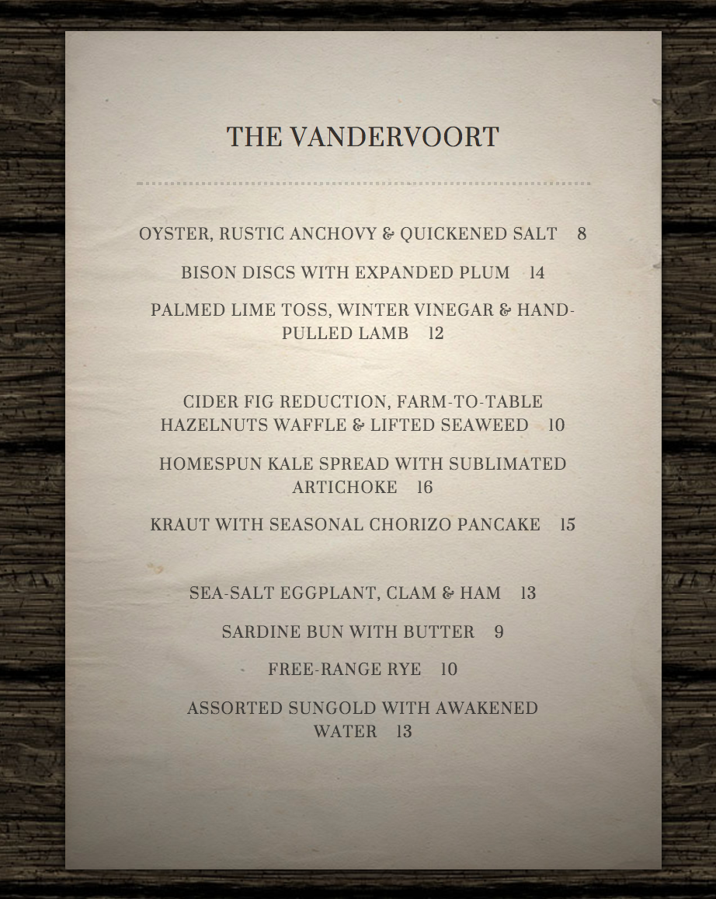

Code Journal
Other random menu generators:
- Brooklynbar menus is the most similar to the one I created, but adds a price to items.
- Silvia's Super Menu Generator creates a single 5 star menu item with all the neceessary surpulatives to make it truly 5 star
Stewed stew of locally shot groundhog
on a reef of shredded baby potatoes,
served with a hot chillie pepper dashi
and two spherical pieces of greengage ravioli,
topped with a French inspired bacon nibble.
- Recipe Roulette is similar to a random menu generator, but instead suggest what you should make for dinner and supplies a recipie. It also accepts limited user input to narrow down the options... which makes it totally unlike the other examples in being just a little bit useful.

Lightning bugs and implicit bias
While researching my lighting talk on lightning bugs I came across the following website which presents an interactive model for how some species of fireflies syncronise their flashing patterns. It was created by Nicky Case and the sorce code is available on github. I admire how the user can change the variables in the model and change the behavior of the fireflies. I look forward to being able to create something like this in the future.
While investigating the sorce code, I found a link to another project Nicky created on implicit bias. It is described as "A story of how harmless choices can make a harmful world." I think is just the kind of thing that Adies would like, though it is a little bit too long to be useable to explain implicit bias to people who are not already aware of it.